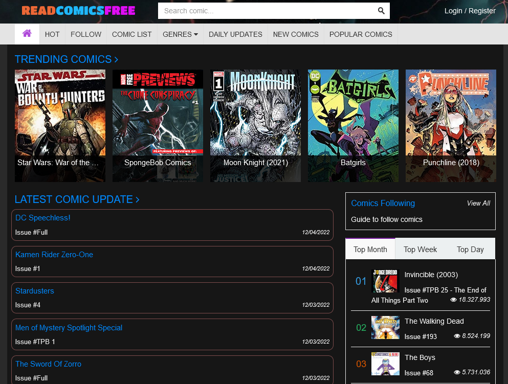
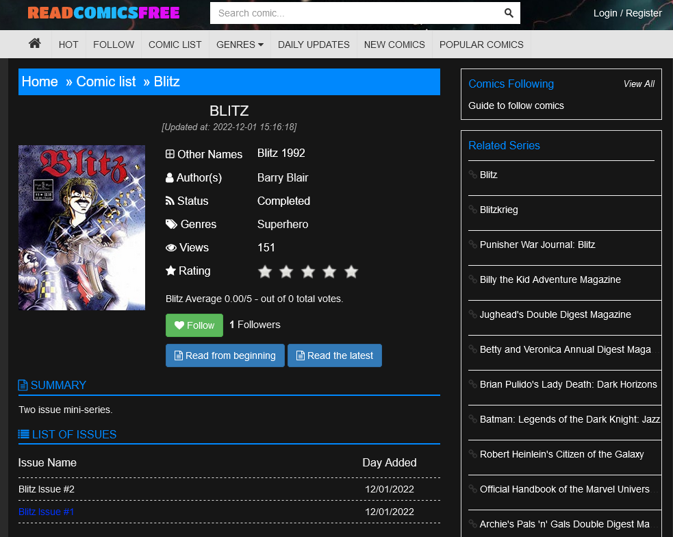
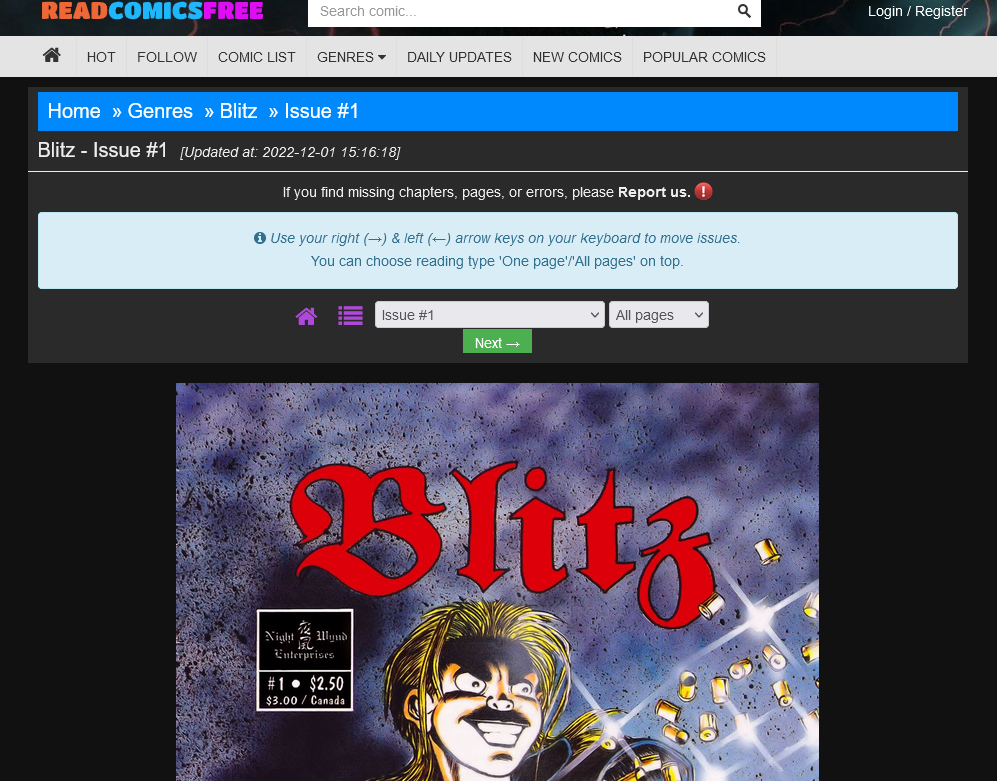

Utilidad para descargarse automáticamente las páginas de un comic desde una web y generar un archivo .CBZ con ellas.
Últimamente nos ha pasado que hemos buscado un par de comics para descargar y leer en la tablet, pero sólo los hemos encontrado en páginas que permitían leerlos directamente en el navegador, pero no descargarlos. Que, oye, esta bien para verlos en un monitor haciendo scroll con la rueda del ratón, pero en la pantalla de la tablet el "marco" de la web se come mucho espacio y además necesita conexión a internet. O sea que olvídate de leer en el metro, por ejemplo.
Obviamente, si podemos ver las páginas del comic en el navegador también podemos descargarlas y, con un poco de paciencia reunirlas todas y generar un fichero cbz (o cbr) que podamos usar en nuestro lector de comics.
Una forma de descargarse las imágenes es: cargar la web en el navegador; pulsar con el botón derecho sobre cada página del comic; y seleccionar Guardar imagen, Guardar como, o similar. Esto, a partir de la página 100, como que pierde la gracia, así que vamos a intentar automatizarlo en la medida de lo posible.
El objetivo de este proyecto es crear un web scraper en Python que se conecte a una de estas webs, se descargue automáticamente las imágenes de las páginas del comic y cree un archivo cbz con dichas imágenes
Antes de ponernos a programar tenemos que hacernos una idea de como se organizan los comics en la página web.
Tomemos como ejemplo la página readcomicsfree.net:
En la página principal tenemos una caja de búsqueda unas cuantas listas con las últimas incorporaciones, tendencias, etc.

Si pulsamos sobre algún comic nos lleva hasta su ficha. Aquí podemos ver algunos datos como el autor o el género del comic.
Una cosa se se agradece es que el formato de las URLs es bastante claro y sencillo. La URL para ir al comic Blitz, por ejemplo, (que es comic más reciente en el momento de escribir esto), es https://readcomicsfree.net/comic/blitz y en general, para cualquier comic sigue el formato https://readcomicsfree.net/comic/{NAME} donde {NAME} es el nombre del comic
Por otro lado, en el apartado List of Issues podemos ver una lista con los volúmenes o tomos disponibles para visionar.

Cada entrada es un link desde el que podemos leer el correspondiente volumen. Veamos la sección del código fuente que define esta lista:
<div class="list-chapter" id="nt_listchapter"> <h2 class="list-title"> <i class="fa fa-list"> </i> List of issues </h2> <nav> <ul> <li class="row heading"> <div class="col-xs-9 no-wrap">Issue Name</div> <div class="col-xs-3 no-wrap text-center">Day Added</div> </li> <li class="row"> <div class="col-xs-9 chapter"> <a href="https://readcomicsfree.net/comic/blitz/issue-2">Blitz Issue #2</a> </div> <div class="col-xs-3 text-center">12/01/2022</div> </li> <li class="row"> <div class="col-xs-9 chapter"> <a href="https://readcomicsfree.net/comic/blitz/issue-1">Blitz Issue #1</a> </div> <div class="col-xs-3 text-center">12/01/2022</div> </li> </ul> </nav> <div id="ctl00_mainContent_ctl01_divPager" class="pagination-outter"> <ul class="pagination"> </ul> </div> </div>
Aquí vemos que los links que nos interesan están dentro de la sección <div class="list-chapter" id="nt_listchapter">. También queda claro que las URLs de los volúmenes individuales cumplen el formato https://readcomicsfree.net/comic/{NAME}/{ISSUE}, siendo {NAME} el nombre del comic y {ISSUE} el nombre del tomo o volumen.
Inicialmente, al entrar a la URL de un volumen, nos muestra únicamente una página del comic, pero si nos fijamos hay también un botón desplegable donde podemos seleccionar All Pages.

Esto nos lleva a una nueva URL similar a la anterior pero con el sufijo /all al final. Desde aquí ya podemos ver el comic completo haciendo scroll. Con lo que nuestra plantilla para generar las URLs del comic quedaría: https://readcomicsfree.net/comic/{NAME}/{ISSUE}/all.
Vamos al código fuente a ver desde donde se descargan las imágenes:
... <div id='page_1' class='page-chapter'> <img class="lazy" alt='Blitz issue 1 - Page 1' data-index='1' src="data:image/png;base64,R0lGODlhAQABAAD/ACwAAAAAAQABAAACADs=" data-original='https://2.bp.blogspot.com/BAGbHzkIOOycG_XZ8zA2LrwgAAKfDDIm5sD_fL11HlSTROVfEoSnhDbHYrmY_GZ3VCw6Cy3ubiQuQ-umvAFoQ0Gsv8KSvKFZPMpoFI9Wc1ljT8klrQnH7Nm1pxhnld8_CRMSJBq6Cg=s0?rhlupa=MjYwNDphODgwOjQ6MWQwOjo1YTQ6NDAwMA&rnvuka=TW96aWxsYS81LjAgKFgxMTsgTGludXggeDg2XzY0KSBBcHBsZVdlYktpdC81MzcuMzYgKEtIVE1MLCBsaWtlIEdlY2tvKSBIZWFkbGVzc0Nocm9tZS8xMDYuMC41MjQ5LjkxIFNhZmFyaS81MzcuMzY=' /> </div> <div id='page_2' class='page-chapter'> <img class="lazy" alt='Blitz issue 1 - Page 2' data-index='2' src="data:image/png;base64,R0lGODlhAQABAAD/ACwAAAAAAQABAAACADs=" data-original='https://2.bp.blogspot.com/U6IBkSotsaNcv2mE_u8fUmJxAgFArDcwXwY9hn3LyK-QAH6NNN4tQe-R2F2ps_oWDvevZrICijeTBgHQ_ZqquEFAW7qaUFl14piAwZjYxLat-UXGSfy9oUYmqFv0r19DiKCGXpxlAQ=s0?rhlupa=MjYwNDphODgwOjQ6MWQwOjo1YTQ6NDAwMA&rnvuka=TW96aWxsYS81LjAgKFgxMTsgTGludXggeDg2XzY0KSBBcHBsZVdlYktpdC81MzcuMzYgKEtIVE1MLCBsaWtlIEdlY2tvKSBIZWFkbGVzc0Nocm9tZS8xMDYuMC41MjQ5LjkxIFNhZmFyaS81MzcuMzY=' /> </div> <div id='page_3' class='page-chapter'> <img class="lazy" alt='Blitz issue 1 - Page 3' data-index='3' src="data:image/png;base64,R0lGODlhAQABAAD/ACwAAAAAAQABAAACADs=" data-original='https://2.bp.blogspot.com/_PRXQJLKxw2U8La2ZvhPfDaG60xKvrv5tmjysnPQ_w7qDzZn2tq4cC0xQnBPCF65r6-Jn7QMyZJwn8nOLLIInxpe_gObKkUQCrKQ4SSKfINHXHgelbcsKw6w5q1aRXd1forL5HYJdA=s0?rhlupa=MjYwNDphODgwOjQ6MWQwOjo1YTQ6NDAwMA&rnvuka=TW96aWxsYS81LjAgKFgxMTsgTGludXggeDg2XzY0KSBBcHBsZVdlYktpdC81MzcuMzYgKEtIVE1MLCBsaWtlIEdlY2tvKSBIZWFkbGVzc0Nocm9tZS8xMDYuMC41MjQ5LjkxIFNhZmFyaS81MzcuMzY=' /> </div> ...
Lo primero, hay que agradecer a los desarrolladores de esta web que han metido cada imagen en un <div> cuya id es el número de página de la imagen. Esto nos va a simplificar mucho las cosas.
Por otro lado, los tags <img> está definidos como class="lazy" esto nos hace sospechar que se van a cargar de manera diferida, cosa que confirmamos al hacer scroll en la página. Vemos como las imágenes se van cargando según vamos avanzando.
Normalmente, veríamos la URL de la imagen en el atributo src de <img>, pero en este caso, al usar una carga diferida, parece que lo que hay en src es simplemente un placeholder que se muestra hasta que carga la imagen definitiva. La URL de la imagen con la página del comic la podemos encontrar en el atributo data-original en este caso.
Con esto ya tenemos toda la información que necesitamos para escribir nuestro script.
Para el desarrollo hemos usado Python 3.9 y las siguientes librerías externas:
Para tener las mismas versiones de las librerías que hemos usado nosotros y evitar errores de compatibilidad podemos fijar las version al usar pip mediante:
>pip install requests==2.28.1 beautifulsoup4==4.11.1 pillow==9.3.0
Empecemos por el núcleo del asunto. ¿Cómo descargamos un fichero de internet? Pues para eso tenemos Requests.
import requests imgRequest = requests.get('ImgURL', stream=True) if imgRequest.status_code == 200: imgStream = imgRequest.raw with open('file.jpg', 'wb') as f: f.write(imgRequest.read())
Para empezar llamamos a request.get() y le pasamos la URL de la imagen que queremos descargar.
imgRequest = requests.get('ImgURL', stream=True) ...
Esta función conecta el servidor al que apunta dicha URL, le hace una petición de tipo "GET" y nos devuelve un objeto request.Response con la respuesta del servidor. Como el fichero que queremos descargar puede ser relativamente grande también pasamos stream=True. De esta manera el cuerpo de la respuesta se tratará como un stream de datos del que podemos ir leyendo como si fuera un fichero, en lugar de descargarse de golpe.
A continuación comprobamos el código de estado de la respuesta.
if imgRequest.status_code == 200: ...
El atributo status_code guarda el código de estado de nuestra respuesta. El código 200 indica que la petición se ha procesado correctamente. Si es el caso, procedemos a la descarga.
Como dijimos antes, al pasar stream=True en la llamada a requests.get() vamos a obtener el cuerpo de la respuesta en forma de stream.
imgStream = imgRequest.raw ...
En este caso, en el atributo raw tenemos un objeto que se comporta como un identificador de fichero.
Una vez tenemos este identificador podemos usarlo para leer el contenido de la respuesta y guardarlo en un fichero local.
with open('file.jpg', 'wb') as f: f.write(imgRequest.read())
Y con esto ya estaría... Si te fías de que la imagen se ha descargado correctamente, o de que el formato de la imagen es jpg, o de que se trata realmente de una imagen.
¿Sabes qué? Mejor añadimos algún tipo de comprobación, que a saber qué te acabas de descargar. Para ello vamos a usar PIL.Image, del paquete Pillow.
from PIL import Image import requests imgRequest = requests.get('ImgURL', stream=True) if imgRequest.status_code == 200: image = Image.open(imgRequest.raw) if image.format == 'JPEG': imgExtension = '.jpg' elif image.format == 'PNG': imgExtension = '.png' elif image.format == 'WEBP': imgExtension = '.webp' else: raise ValueError(f"Unsupported image format: {image.format}") image.save('file{imgExtension}')
Vale, entonces, en lugar de guardar la respuesta del servidor directamente le pasamos el stream a Image.open().
... image = Image.open(imgRequest.raw) ...
Image es una clase que se usa para generar y manipular imágenes. Lo que nos interesa a nosotros es que entiende un montón de formatos de ficheros de imagen distintos. Con Image.open() podemos crear un objeto Image a partir del stream de datos que nos devuelve el servidor. Si los datos se corresponden efectivamente con algún formato de imagen conocido, nos devolverá el objeto Image. Si no, lanza una excepción de este estilo:
PIL.UnidentifiedImageError: cannot identify image file <_io.BufferedReader>
Con esto nos aseguramos que lo que contiene la variable image es, efectivamente una imagen. Si no, la excepción provocará la finalización del programa con su mensaje de error.
Ahora que sabemos que tenemos una imagen de verdad, podemos ver que tipo de imagen es usando el atributo format.
... if image.format == 'JPEG': imgExtension = '.jpg' elif image.format == 'PNG': imgExtension = '.png' elif image.format == 'WEBP': imgExtension = '.webp' else: raise ValueError(f"Unsupported image format: {image.format}") ...
Con esto definimos la extensión de fichero que vamos a usar para guardar la imagen localmente a partir de su tipo original. Nos centramos en imágenes tipo JPEG, PNG o WebP, porque son los formatos que cabe esperar para guardar la página de un comic. En principio, podríamos usar PIL.Image para convertir una imagen entre formatos, cargando un GIF y guardando un JPEG, por ejemplo, pero si lo que nos hemos descargado es un GIF entonces lo más probable es que nos hallamos equivocado de URL y nos estemos descargando un banner*. En ese caso, prefiero lanzar una excepción y que termine el programa.
Para terminar usamos el método save() del objeto Image para guardar la imagen en disco.
... image.save('file{imgExtension}') ...
Este método determina el formato con el que queremos guardar la imagen a partir de la extension del fichero de salida.
Encapsulamos todo dentro de una función y nos queda:
from pathlib import Path from PIL import Image import requests def downloadImage(target_url: str, out_path: Path) -> None: imgRequest = requests.get(target_url, stream=True) if imgRequest.status_code == 200: image = Image.open(imgRequest.raw) if image.format == 'JPEG': imgExtension = '.jpg' elif image.format == 'PNG': imgExtension = '.png' elif image.format == "WEBP": imgExtension = '.webp' else: raise ValueError(f"Unsupported image format: {image.format}") image.save(out_path.with_suffix(imgExtension)) else: raise ConnectionError(f'Error requesting image with url "{target_url}". ' f'Response code: {imgRequest.status_code}')
Esta función se descarga una imagen desde target_url y la guarda en out_path usando la extension que corresponda al tipo de imagen descargada. out_path tiene que ser un objeto de tipo pathlib.Path.
Vale, ya podemos bajarnos cualquier imagen dada su URL, ahora necesitamos encontrar las URLs de las imágenes que componen el tomo que nos interesa.
Como hemos visto antes, la URL desde donde se puede leer el tomo es https://readcomicsfree.net/comic/{NAME}/{ISSUE}/all. También vimos que cada imagen del comic se encuentra dentro de un elemento <div> cuya id es el número de página y cuya clase es 'page-chapter':
<div id='page_1' class='page-chapter'> <img class="lazy" alt='Blitz issue 1 - Page 1' ... > </div> ...
Lo primero que vamos a hacer es descargarnos el documento html usando requests, como hicimos con las imágenes. Bueno, y ya de paso creamos los directorios donde se irán guardando las imágenes descargadas.
from pathlib import Path import requests target = 'blitz' volume = 'issue-1' targetDir = Path(target) targetDir.mkdir(exist_ok=True) url = f"https://readcomicsfree.net/comic/{target}/{volume}/all" response = requests.get(url) if response.status_code == 200: volumeDir = targetDir / volume volumeDir.mkdir(exist_ok=True)
Aquí, target contiene el nombre del comic y volume el nombre del volumen que queremos descargar.
Primero se crea un directorio con el nombre del comic.
... targetDir = Path(target) targetDir.mkdir(exist_ok=True) ...
Por otro lado, componemos la URL objetivo y hacemos la petición del documento html con request.get().
... url = f"https://readcomicsfree.net/comic/{target}/{volume}/all" response = requests.get(url) ...
Comprobamos el status_code de la respuesta, y si todo ha ido bien creamos un subdirectorio para las imágenes descargadas de este volumen, dentro del directorio general del comic
... if response.status_code == 200: volumeDir = targetDir / volume volumeDir.mkdir(exist_ok=True)
Ahora que tenemos el documento html, y por lo que sabemos de como está estructurada la web, tenemos que buscar todos elementos <img> que estén dentro de un elemento <div class='page-chapter'>
from pathlib import Path import requests from bs4 import BeautifulSoup ... if response.status_code == 200: volumeDir = targetDir / volume volumeDir.mkdir(exist_ok=True) soup = BeautifulSoup(response.content, "html.parser") page_divs = soup.find_all(attrs={"class": "page-chapter"}) for div in page_divs: pageName = div.attrs['id'] pageNum = int(pageName[5:]) print(f'Downloading image: {pageName}') imgTag = div.find('img') imgURL = imgTag.attrs['data-original']
Creamos un objeto BeautifulSoup que parsea el contenido del documento html. Con ese objeto podemos hacer búsqueda con distintos criterios. En este caso, buscamos todos los elementos con class='page-chapter.
... soup = BeautifulSoup(response.content, "html.parser") page_divs = soup.find_all(attrs={"class": "page-chapter"}) ...
Esto nos devuelve una lista. Ahora, para cada elemento de la lista:
Sacamos el nº de página, porque sabemos que su id es "page_{num}".
... for div in page_divs: pageName = div.attrs['id'] pageNum = int(pageName[5:]) ...
Buscamos el elemento <img> en su interior.
... imgTag = div.find('img') ...
Y obtenemos la URL de la imagen que está guardada en el atributo data-original de dicho elemento <img>
... imgURL = imgTag.attrs['data-original'] ...
Pues nada, ahora añadimos `downloadImage() para descargarnos la imagen, encapsulamos lo que podamos en una función:
from pathlib import Path import shutil from bs4 import BeautifulSoup from PIL import Image import requests def downloadImage(target_url: str, out_path: Path) -> None: ... def downloadVolume(volume_url:str, volume_dir:Path): response = requests.get(volume_url) if response.status_code == 200: volume_dir.mkdir(exist_ok=True) soup = BeautifulSoup(response.content, "html.parser") page_divs = soup.find_all(attrs={"class": "page-chapter"}) for div in page_divs: pageName = div.attrs['id'] pageNum = int(pageName[5:]) print(f'Downloading image: {pageName}') imgTag = div.find('img') imgURL = imgTag.attrs['data-original'] downloadImage(imgURL, volumeDir / f'page{pageNum:04}') target = 'blitz' volume = 'issue-1' targetDir = Path(target) targetDir.mkdir(exist_ok=True) volumeUrl = f"https://readcomicsfree.net/comic/{target}/{volume}/all" volumeDir = targetDir / volume print(f'Downloading pages for volume: {volume}') downloadVolume(volumeUrl, volumeDir)
Fíjate que a el nombre de fichero que le pasamos a downloadImage() lo construimos usando el número de página.
También hemos añadido un par de llamadas a print() para poder ver como va el proceso de descarga.
Esta parte es bastante sencilla. Solo tenemos que comprimir el directorio con todas las imágenes que nos hemos descargado en un fichero .zip y luego cambiarle el nombre por .cbz
... import shutil ... def buildCBZ(target_dir): print(f'Compressing folder: {target_dir}') shutil.make_archive(target_dir, 'zip', target_dir) cbzFileName = target_dir.with_suffix('.zip') cbzFileName.rename(cbzFileName.with_suffix('.cbz')) ... target = 'blitz' volume = 'issue-1' targetDir = Path(target) targetDir.mkdir(exist_ok=True) volumeUrl = f"https://readcomicsfree.net/comic/{target}/{volume}/all" volumeDir = targetDir / volume downloadVolume(volumeUrl, volumeDir) buildCBZ(volumeDir)
Usamos shutil.make_archive() para generar el archivo .zip. El paquete shutil forma parte de la librería estándar de Python, así que no hace falta instalarlo con *PiP.
... shutil.make_archive(target_dir, 'zip', target_dir) ...
Por cierto que shutil.make_archive() ya añade la extension .zip al fichero de salida, por eso usamos directamente target_dir tanto como nombre del directorio de entrada como del fichero de salida.
En el caso del ejemplo, acabaríamos con el directorio issue-1 y el fichero issue-1.cbz dentro del directorio blitz
En verdad se podría dejar así. Dependiendo de la pereza que te de buscar los nombres de los volúmenes y relanzar el script manualmente para cada volumen. Que tampoco suelen ser muchos. Pero ya que hemos llegado hasta aquí vamos a ver como sacamos las URLs de cada volumen con BeautifulSoup.
Lo que nos queda por hacer se parece bastante a downloadVolume() así que vamos a verlo directamente encapsulado como función:
def downloadComic(comic_name, comic_url): response = requests.get(comic_url) if response.status_code == 200: targetDir = Path(comic_name) targetDir.mkdir(exist_ok=True) soup = BeautifulSoup(response.content, 'html.parser') listChapterDiv = soup.find('div', attrs={'class': 'list-chapter'}) volumeLinkList = listChapterDiv.find_all('a') for volLink in volumeLinkList: vURL = volLink.attrs['href'] vName = vURL.split('/')[-1] volumeDir = targetDir / vName print(f'Downloading pages for volume: {vName}') downloadVolume(vURL + '/all', volumeDir) buildCBZ(volumeDir)
Como ya hemos visto antes hacemos una petición a la URL del comic, y si el status_code de la respuesta es correcto creamos el directorio principal del comic.
def downloadComic(comic_name, comic_url): response = requests.get(comic_url) if response.status_code == 200: targetDir = Path(comic_name) targetDir.mkdir(exist_ok=True) ...
Luego parseamos el documento con BeautifulSoup() y buscamos el elemento cuya clase es "list-chapter". Y dentro de ese elemento buscamos todos los tags de link (<a> en HTML). Estos van a contener las URLs donde ver los distintos volúmenes del comic.
... soup = BeautifulSoup(response.content, 'html.parser') listChapterDiv = soup.find('div', attrs={'class': 'list-chapter'}) volumeLinkList = listChapterDiv.find_all('a') ...
Entonces, para cada link, extraemos la URL del atributo href. Sabemos de antes que el formato de las URLs de volumen es "https://readcomicsfree.net/comic/{target}/{volume}, así que para sacar el nombre del volumen partimos la cadena con la URL usando el carácter '/' como separador y tomamos el último elemento resultante. Usando ese nombre creamos el subdirectorio para el volumen.
... for volLink in volumeLinkList: vURL = volLink.attrs['href'] vName = vURL.split('/')[-1] volumeDir = targetDir / vName ...
Ahora sí, para terminar, llamamos a downloadVolume() y buildCBZ(), pero ojo, que las URLs que hemos obtenido antes nos llevan a la versión del sitio donde donde solo se pueden ver las páginas de una en una. Para ir a la versión que muestra todas las páginas a la vez tenemos que añadir '/all' al final de la URL antes de pasársela a downloadVolume()
... print(f'Downloading pages for volume: {vName}') downloadVolume(vURL + '/all', volumeDir) buildCBZ(volumeDir)
Bueno, pues si juntamos todo lo que hemos visto antes, esta sería la versión final del script completo:
from pathlib import Path import shutil from bs4 import BeautifulSoup from PIL import Image import requests def downloadComic(comic_name, comic_url): response = requests.get(comic_url) if response.status_code == 200: targetDir = Path(comic_name) targetDir.mkdir(exist_ok=True) soup = BeautifulSoup(response.content, 'html.parser') listChapterDiv = soup.find('div', attrs={'class': 'list-chapter'}) volumeLinkList = listChapterDiv.find_all('a') for volLink in volumeLinkList: vURL = volLink.attrs['href'] vName = vURL.split('/')[-1] volumeDir = targetDir / vName print(f'Downloading pages for volume: {vName}') downloadVolume(vURL + '/all', volumeDir) buildCBZ(volumeDir) def downloadVolume(volume_url: str, volume_dir: Path): response = requests.get(volume_url) if response.status_code == 200: volume_dir.mkdir(exist_ok=True) soup = BeautifulSoup(response.content, 'html.parser') pageDivs = soup.find_all(attrs={'class': 'page-chapter'}) for div in pageDivs: pageName = div.attrs['id'] pageNum = int(pageName[5:]) print(f'Downloading image: {pageName}') imgTag = div.find('img') imgURL = imgTag.attrs['data-original'] downloadImage(imgURL, volume_dir / f'page{pageNum:04}') def downloadImage(target_url: str, out_path: Path) -> None: imgRequest = requests.get(target_url, stream=True) if imgRequest.status_code == 200: image = Image.open(imgRequest.raw) if image.format == 'JPEG': imgExtension = '.jpg' elif image.format == 'PNG': imgExtension = '.png' elif image.format == "WEBP": imgExtension = '.webp' else: raise ValueError(f'Unsupported image format: {image.format}') image.save(out_path.with_suffix(imgExtension)) else: raise ConnectionError(f'Error requesting image with url "{target_url}". ' f'Response code: {imgRequest.status_code}') def buildCBZ(target_dir): print(f'Compressing folder: {target_dir}') shutil.make_archive(target_dir, 'zip', target_dir) cbzFileName = target_dir.with_suffix('.zip') cbzFileName.rename(cbzFileName.with_suffix('.cbz')) if __name__ == '__main__': target = 'blitz' targetURL = f'https://readcomicsfree.net/comic/{target}' downloadComic(target, targetURL)
Y hasta aquí nuestro ejemplo. Solo he comentado lo imprescindible de los distintos paquetes que hemos usado para no extenderme demasiado, pero puedes encontrar más información sobre el uso de Python y BeautifulSoup para hacer web scraping aquí o aquí. Si quieres ir a más bajo nivel la guía de usuario de Requests también esta muy bien.